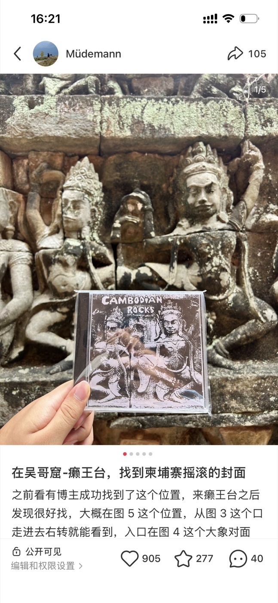
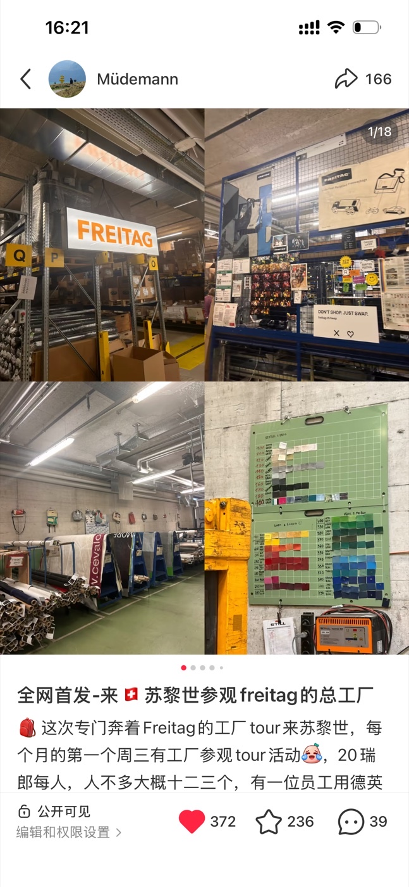

01
商业化产品经理实习生
我先对比了几款浏览器的广告，再和设计、前端一起整理信息流、搜索结果和详情页的样式，把能共用的部分做成组件。我也写过需求文档，跟过测试和上线。
产品设计需求方案与上线推进样式标准化广告规范与组件协作
我在深圳读计算社会科学硕士，做过产品和海外增长。这里也放了几篇我的旅行笔记。
↓INDEX / 目录
01 / PROFILE
本科在南开学德语，辅修博物馆学，也去慕尼黑交换过一年。我在南开外院踢过球，还当过队长。出去旅行，我喜欢给自己寄明信片，回家再夹到墙上。
02 / PRACTICE
WORK · PEOPLE · PRODUCTS
做过浏览器广告、巴西外卖增长、海外搜索和零部件项目。下面是每段实习里我负责或参与的部分。
我先对比了几款浏览器的广告，再和设计、前端一起整理信息流、搜索结果和详情页的样式，把能共用的部分做成组件。我也写过需求文档，跟过测试和上线。
我在滴滴巴西外卖团队支持新城市上线。按用户分组配置优惠券，用 A/B 测试比较方案，也负责通过 Push、邮件和 WhatsApp 发活动消息。我做过竞品监测工具，也参与了招商 AI 助手的知识库整理和评测。
我做 Vmake 和 Zawa 的海外搜索增长。用 Search Console 和 GA4 看流量，结合 Semrush、Ahrefs 找关键词，再更新落地页。我也联系过创作者和媒体，搭过多语言内容的生成和分发流程。
我跟进零部件项目的技术评审和交付，在技术、采购和供应商之间核对进度。我也整理行业和竞品数据，做成图表和报告，供团队评估供应商和技术路线。
03 / STUDY & RESEARCH
这几门课主要在学怎么处理文本、用数据回答问题。本科论文做的是德语和荷兰语的语序对比。
计算社会科学硕士
CUHK-SHENZHEN公派交换 · 对外德语
LMU MUNICH德语学士 · 博物馆学辅修
NANKAI UNIVERSITYSELECTED COURSES / 课程
学回归、分类和模型评估，练习判断一个预测结果有多可靠。
ML / SOCIAL DATA清洗文本、统计词频，再用自然语言处理分析词在不同语境里怎么用。
TEXT / NLP把一个研究问题拆成可以检验的假设，再选数据、做分析，解释结果。
DESIGN / EVIDENCEWortstellung im Deutschen und Niederländischen
研究两种西日耳曼语言在主从句动词位置、句框结构和信息焦点上的异同，并追问荷兰语的简化是否预示德语未来的变化。
将句子拆分为前场、左右句框、中场与后场，在统一框架内比较 V2 原则、多动词排序、成分省略和“破框”现象。
两种语言的主句都遵循动词第二位规则。到了从句，荷兰语的动词顺序更灵活，也更常省略助动词。
05 / PERSONAL ATLAS
下面有几张交换和旅行时拍的照片。地图可以按年份看，点地图上的标记，可以看到国家和到访年份。
点开看大图。
南开大学外国语学院足球队队长 · 12 年拜仁球迷 · 安联球场现场观赛
中文 · English · Deutsch · Nederlands
旅行时寄给自己的明信片，和顺手买的纪念片，都夹在同一面墙上。
06 / THINGS I USE
07 / CONTACT
04 / PUBLIC NOTES
路上遇到的事，
我会写成公开笔记。
我在小红书叫 Müdemann。这里挑了几篇以前发过的笔记，有冰岛自驾，也有去吴哥找唱片封面。
精选故事

柬埔寨 · 吴哥
带着一张唱片，去吴哥找封面
石象对面有个入口。走进去右转，就是《Cambodian Rocks》封面上的浮雕。
↗冰岛 · 南线
二十岁，在冰岛开了 1,600 公里
四个人，五天四晚。从机场取车，一路沿南线开到东南部的赫本。
↗婆罗洲 · 亚庇至文莱
一趟大巴往返，盖了 16 个章
来回坐大巴，从一个口岸出境，再从另一个口岸入境。两趟一共盖了 16 个章。
↗
瑞士 · 苏黎世
为了一间工厂，去一趟苏黎世
跟着十几个人的导览小队，看 FREITAG 怎样把用过的卡车篷布做成包。
↗20 岁冰岛自驾半环岛
1600 KM · 513 LIKES
探访 Freitag 苏黎世总工厂
FACTORY TOUR · 372 LIKES
亚庇往返文莱，一共盖了 16 个章
16 STAMPS · 337 LIKES
我家的明信片墙
MEMORY ARCHIVE · 40+ COUNTRIES
在吴哥窟寻找柬埔寨摇滚封面
905 LIKES · 277 SAVES